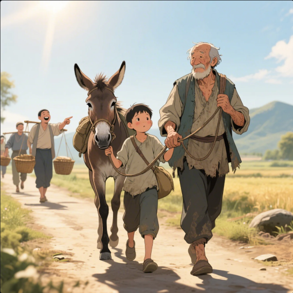
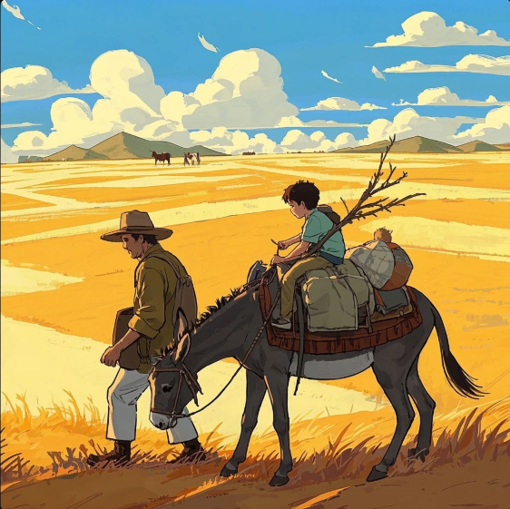
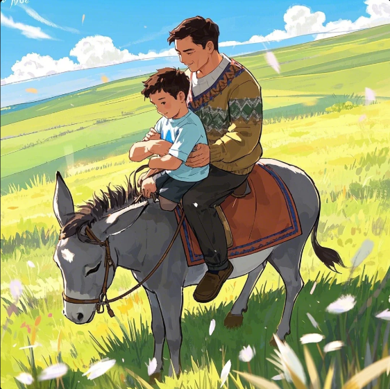
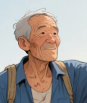
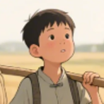

第一章：初遇非议
烈日炎炎的午后，一对父子牵着瘦弱的驴子走在乡间小路上。父亲布满老茧的手握着缰绳，儿子背着简单的行囊跟在后面。这时，迎面走来几个挑担的农夫，其中一人指着他们笑道："这年头真稀奇，有驴不骑偏走路，莫不是傻子？"父亲闻言一怔，手心沁出细汗。

第二章：角色反转
父亲咬咬牙，将儿子抱上驴背。没走多远，又遇见一群妇孺。其中一位老妪颤巍巍地指着他们："这般狠心的儿子，自己骑驴却让老父亲受罪！"父亲的脸瞬间涨得通红，慌忙将儿子拽下驴背，自己翻身骑了上去。驴子发出不安的嘶鸣，四蹄在沙地上刨出浅坑。

第三章：双骑之祸
当两人共乘驴背时，驴子膝盖打颤，嘴角泛起白沫。恰逢书生模样的路人经过，摇头叹道："此等虐畜之举，简直有违天道！"话音未落，驴子轰然倒地，扬起一片黄尘。父子俩呆立当场，行囊散落一地，远处传来乌鸦聒噪的叫声。

故事角色

父亲
传统农人，将他人眼光视为行为准则，在善意批评中逐渐迷失自我判断。
"大家说得都有理，我该如何是好？"

儿子
纯真少年，缺乏独立判断力，被动接受父亲安排，在角色转换中无所适从。
"爹，我们到底该怎么做？"

驴子
无辜的承受者，象征被外界声音左右的个体，最终在矛盾指令中不堪重负。
"我究竟该驮谁？"
故事背后的生存智慧
这则诞生于农耕时代的寓言，在数字时代焕发出新的启示：当我们被社交媒体的点赞数、朋友圈的评论、同事的"建议"裹挟时，是否还记得内心真正的需求？真正的智慧不在于取悦所有人，而在于建立清晰的价值坐标系，在纷扰中守护内心的定海神针。
现代生存启示录
培养批判性思维 - 建立自己的价值判断标准，不盲目跟从"政治正确"
设立心理边界 - 区分建设性意见与情绪化评价，对PUA式批评说"不"
掌握平衡艺术 - 在保持本真与适应环境间找到动态平衡点
培育内在力量 - 通过持续学习建立专业自信，让实力成为最好的保护色